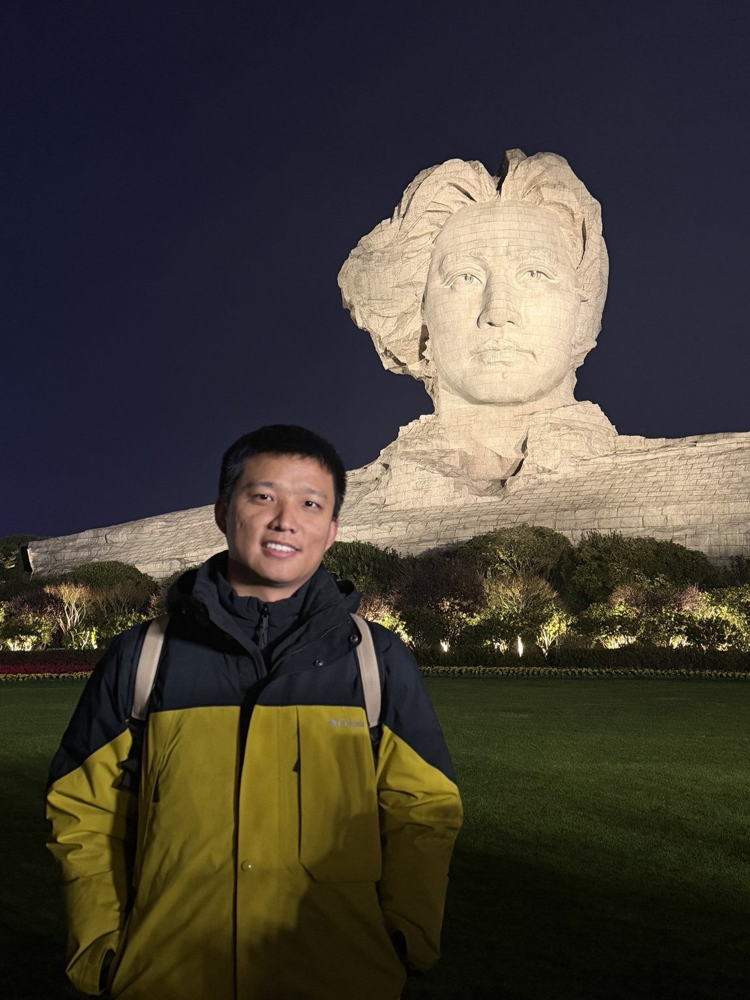

2025.05 — Present
Vision-language navigation
End-to-end VLN model development, training data organization in Habitat, and deployment and communication on Unitree Go2 robots. Experience with R2R, RxR, and Matterport3D.
Embodied perception & vision-language navigation
I am a researcher at SenseTime · ACE Robotics, working on embodied perception and vision-language models for robotic navigation. My current focus is vision-language navigation (VLN), including end-to-end navigation models and their deployment on real robots.
Previously, I worked on LiDAR-based 3D object detection, camera–LiDAR fusion, and large-scale automatic annotation for autonomous driving. I received my master's degree in Transportation Engineering from Beihang University in 2022, advised by Prof. Daxin Tian, and my bachelor's degree in Internet of Things Engineering from Taiyuan University of Technology in 2019.

Vision-language models for scene understanding and language-guided robot navigation.
End-to-end navigation, simulation-based training, and deployment on the Unitree Go2 platform.
LiDAR object detection, camera–LiDAR fusion, and automatic 2D/3D annotation.
Geometry-aware point encoding with a graph-based Transformer for 3D object detection.
Unified spatial and channel representation learning for LiDAR-based 3D detection.
arXiv ↗A large-scale dataset and benchmark for multi-sensor intersection perception and vehicle–infrastructure cooperation.
Efficient pillar encoding for real-time LiDAR-based 3D object detection.
Paper ↗End-to-end VLN model development, training data organization in Habitat, and deployment and communication on Unitree Go2 robots. Experience with R2R, RxR, and Matterport3D.
Built a cloud-based pipeline for large-scale 2D/3D ground-truth generation in autonomous driving. The pipeline integrates camera–LiDAR fusion, temporal tracking, self-training, and quality control to produce high-quality object annotations and trajectories for production perception models.
LiDAR and camera perception, multi-sensor calibration, automatic annotation, and sensor stabilization for roadside edge-computing systems.
Master's degree in Transportation Engineering · Advisor: Prof. Daxin Tian
Bachelor's degree in Internet of Things Engineering